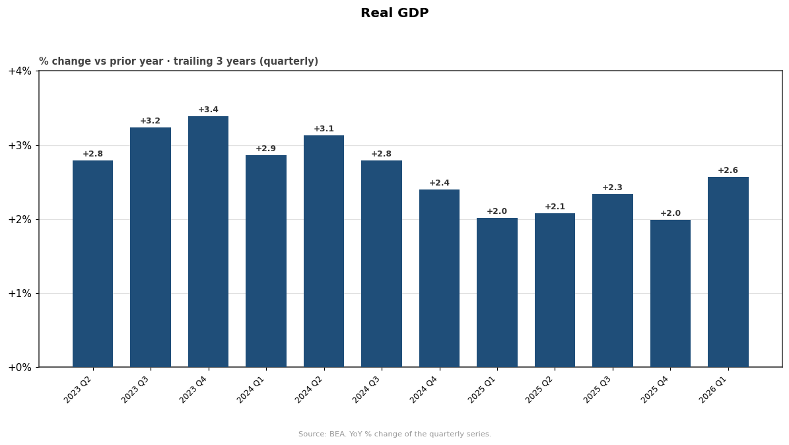
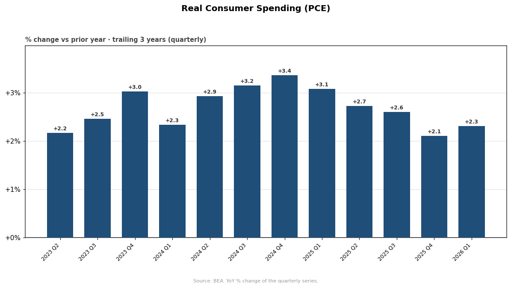
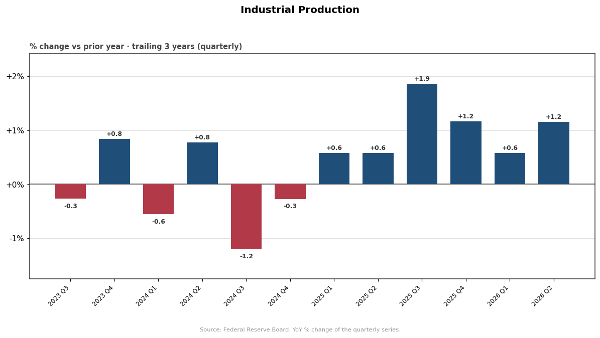
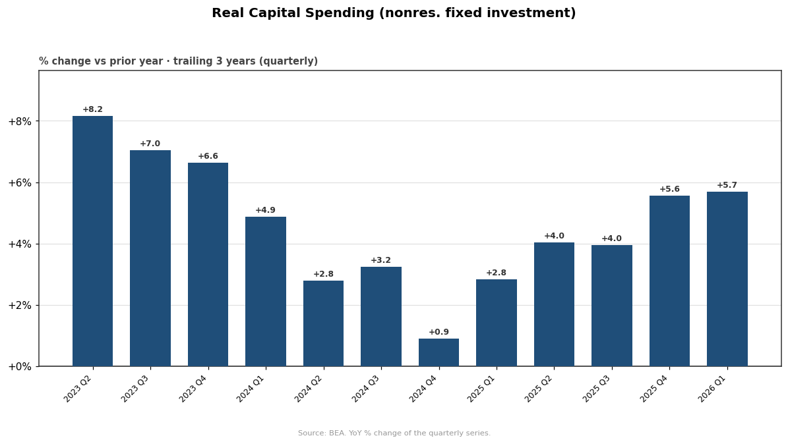
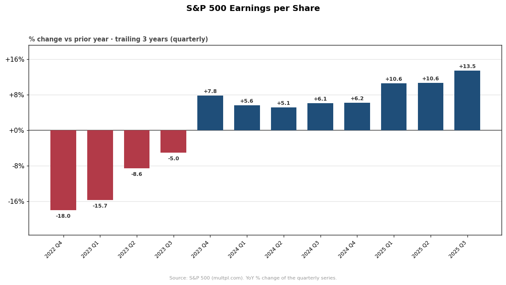
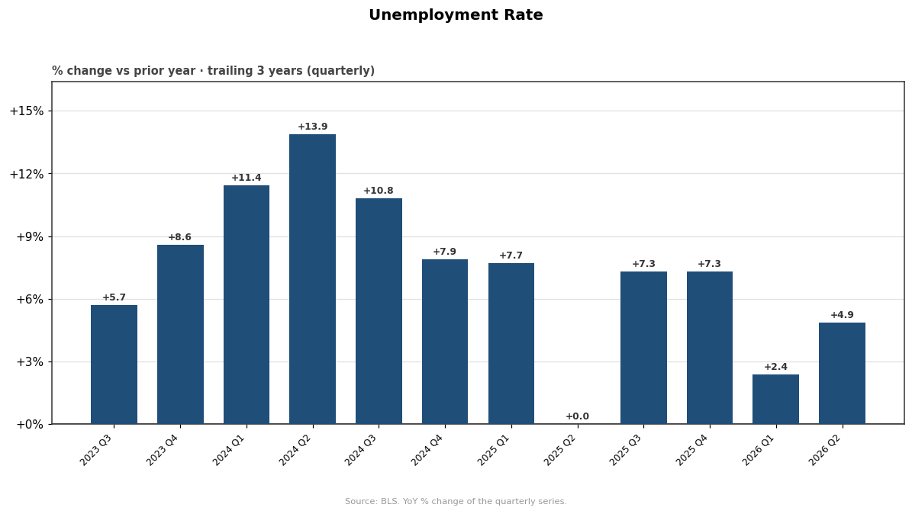
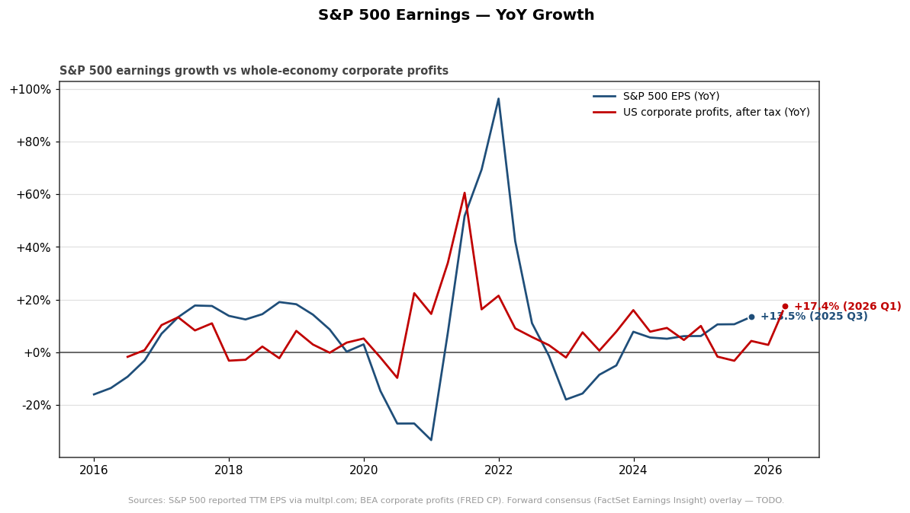

Growth — year-over-year % change (quarterly)
Real GDP · real consumer spending (PCE) · industrial production · real capital
spending · S&P 500 EPS · unemployment — each as a % change versus the prior year, by quarter
(trailing 3 years), plus S&P 500 earnings growth vs whole-economy corporate profits.
Sources: BEA, Federal Reserve Board, BLS, S&P 500 (multpl.com). ·
← market charts · ↑ workspace hub · 7 charts
Real GDP
Source: BEA

Real Consumer Spending (PCE)
Source: BEA

Industrial Production
Source: Federal Reserve Board

Real Capital Spending (nonres. fixed investment)
Source: BEA

S&P 500 Earnings per Share
Source: S&P 500 (multpl.com)

Unemployment Rate
Source: BLS

S&P 500 Earnings — YoY Growth (+ corporate profits)
Source: S&P 500 (multpl.com) + BEA
